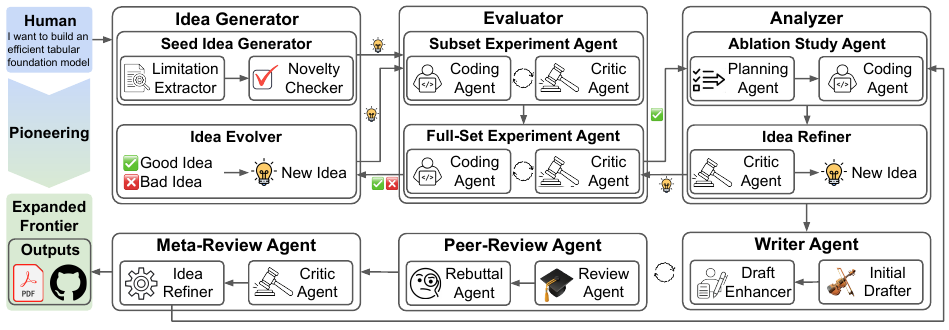
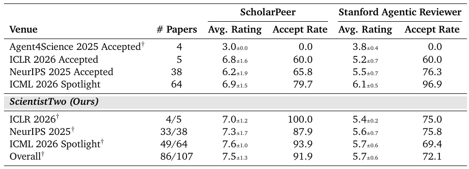
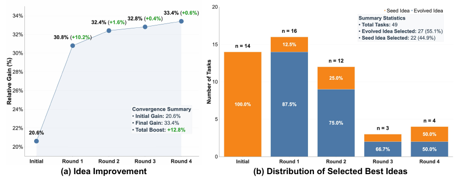

ScientistTwo以自主 AI 拓展人类知识边界
¹ Google Cloud AI Research ² University of Waterloo
输入科学问题，运行完整研究周期
给定科学问题，ScientistTwo 自主识别基线方法的局限，提出新想法、执行实验，并生成论文与可执行代码。
让实验与评审反馈驱动研究

原图 3 · ScientistTwo 将想法生成、子集到全量评估、消融分析、写作、模拟同行评审和元评审连接为闭环。
闭环如何推进
| 阶段 | 决策与反馈 |
|---|---|
| Evaluation · 评估 | 先在子集筛选，再将有潜力的想法扩展至全量基准。 |
| Ablation · 消融 | 分离组件贡献，修正方法后重新验证。 |
| Rebuttal · 答辩 | 围绕评审质疑补做实验，并将结果写回论文。 |
有进展，也有明确的评估边界
80.4% ScientistTwo 在 107 个目标问题中改进了 86 个。
25.2% ScientistTwo 成功案例相对人类基线的平均性能增益。

原表 3 · AI 评审器对人类参考论文与 ScientistTwo 生成论文评分。评分范围为 1–10；录用列为模拟录用率（%）。† 表示 AI 生成论文。
两种 AI 评审器，承担不同角色
在成功生成的 86 篇论文中，ScientistTwo 在 ScholarPeer 下的模拟录用率为 91.9%，在 Stanford Agentic Reviewer 下为 72.1%。前者也用于指导改稿；后者在开发阶段保留作独立评估。这些指标不等同于真实会议录用。
Table 4 中，ScientistTwo 成功案例的增益中位数为 7.7，均值为 25.2（单位均为 %）。均值不能代表每项任务的典型提升。
迭代为什么有效

原图 9 · 在 ICML 来源任务上，ScientistTwo 的提升集中于早期迭代。后续入选想法主要来自演化，成功和失败的执行轨迹都会成为反馈。
另有人工评估交叉验证
9 位资深评审者评估了 33 篇 NeurIPS 来源论文。ScientistTwo 的整体相对偏好评分为 3.0，达到与人类论文持平的标尺；方法严谨性仍略逊。
自主实证研究的潜力与局限
ScientistTwo 展示了自主实证研究能力，但尚不能稳定产出 spotlight 级概念突破。在 33 个 NeurIPS 来源任务的成本分析中，单次研究平均约需 2.5 天、花费 3,765 美元，包含模型 token 与虚拟机成本。